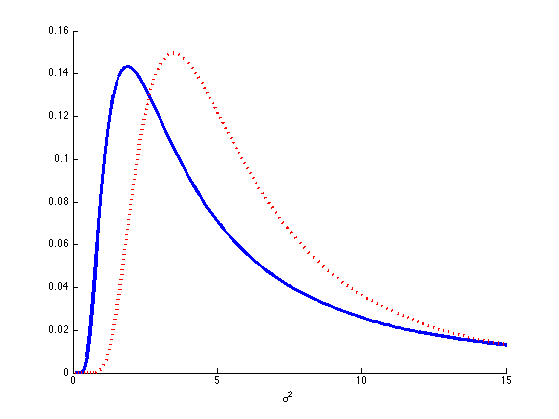
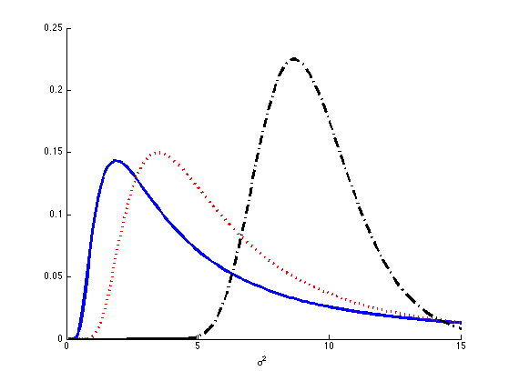
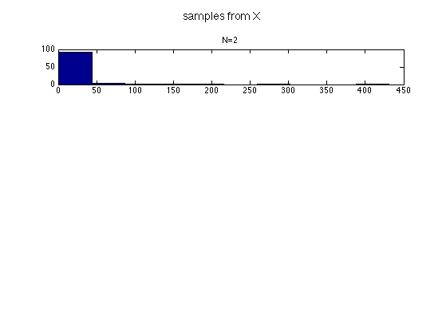
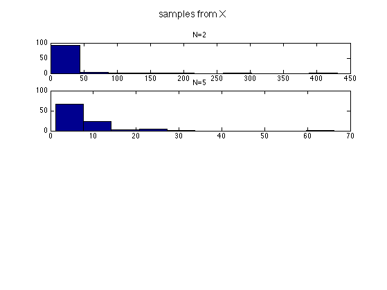
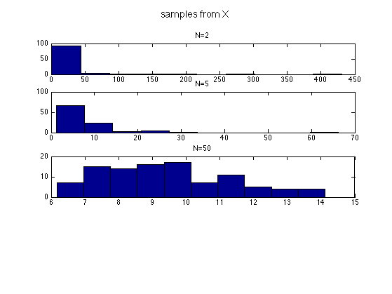
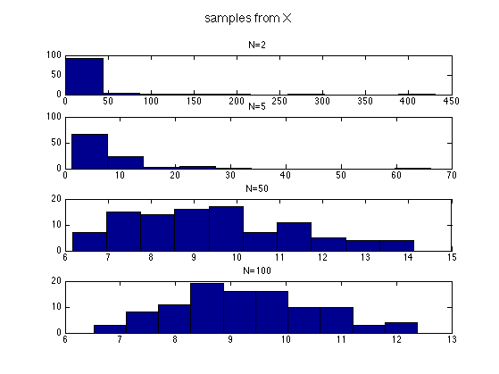
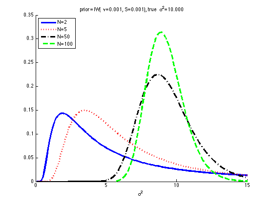
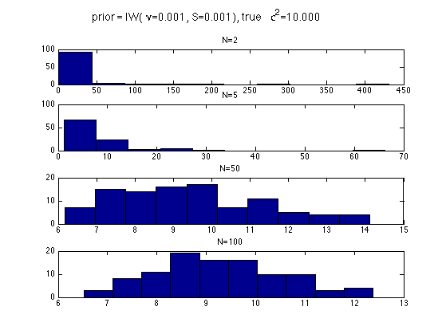

Sequential Updating of Sigma in 1d given fixed mean
Contents
setSeed(1);
Prior
nu = 0.001;
S = 0.001;
prior.Sigma = S;
prior.dof = nu;
True model
mutrue = 5;
Ctrue = 10;
mtrue.mu = mutrue;
mtrue.Sigma = Ctrue;
Generate data
n = 500;
X = gaussSample(mtrue, n);
ns = [2 5 50 100];
fig1 = figure(); hold on;
fig2 = figure();
[styles, colors, symbols] = plotColors();
for i=1:length(ns)
n = ns(i);
data = X(1:n);
mu = mtrue.mu;
T0 = prior.Sigma;
v0 = prior.dof;
Update
vn = v0 + n;
xbar = mean(data);
data = data - xbar;
XX = data'*data/n;
if n > 0
Tn = T0 + n*XX + n*(xbar-mu)*(xbar-mu)';
else
Tn = T0;
end
post.dof = vn;
post.Sigma = Tn;
figure(fig1);
xs = 0.1:0.1:15;
str = sprintf('N=%d', n);
plot(xs, exp(invWishartLogprob(post, xs)), styles{i}, ...
'color', colors(i),'linewidth', 3, 'displayname', str);
xlabel('\sigma^2');

 

if statsToolboxInstalled
if nu<1 && n==0
continue;
end
figure(fig2); subplot(length(ns),1,i);
model.a = post.dof/2;
model.b = post.Sigma/2;
XX = invGammaSample(model, 100);
hist(XX)
title(str)
suptitle('samples from X');
end
   
end
figure(fig1);
legend('location', 'northwest');
titlestr = sprintf('prior = IW(%s=%5.3f, S=%5.3f), true %s=%5.3f', ...
'\nu', nu, S, '\sigma^2', Ctrue);
title(titlestr)
printPmtkFigure sigmaPost;
figure(fig2);
suptitle(titlestr);
 